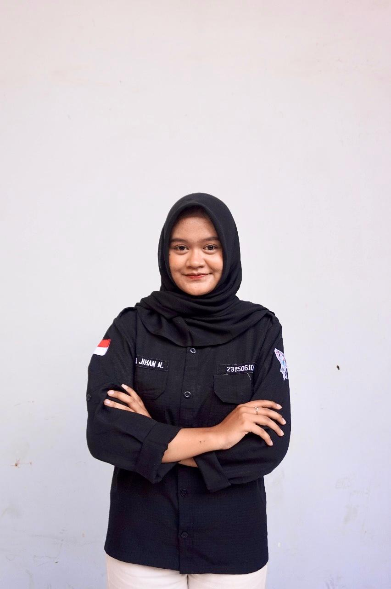

Mobile Analyst & Software Engineer
Sebagai Mahasiswa Teknik Informatika, saya mengkhususkan diri sebagai Mobile Analyst dengan menggunakan prinsip Kapita Selekta fokus pada permasalahan modern dan inti. Saya menganalisis data user engagement dan performa teknis untuk merancang solusi berbasis data yang tidak hanya efektif, tapi juga meningkatkan pengalaman pengguna secara keseluruhan.
Keahlian Utama
Acuan SWEBOK
Untuk memastikan proyek sesuai standar rekayasa perangkat lunak, beberapa Knowledge Area dari SWEBOK dijadikan acuan:
- Software Requirements: Mendeskripsikan kebutuhan fungsional dan non-fungsional sistem.
- Software Design: Merancang arsitektur sistem, skema database, dan desain UI/UX.
- Software Construction: Implementasi coding modul event-tracking dan pembangunan dashboard.
- Software Testing: Melakukan verifikasi dan validasi data agar akurat dan fungsional.
Rencana Judul Project KP & Skripsi
Berdasarkan minat dan tren industri, berikut adalah judul yang saling mendukung:
Judul KP:
Pengembangan Prototype Dashboard untuk Monitoring Aktivitas Pengguna pada Aplikasi Mobile Menggunakan Google Data Studio.
Judul Skripsi:
Rancang Bangun Dashboard Visualisasi Data Interaktif untuk Memonitor User Engagement dan Retensi pada Aplikasi Mobile Berbasis Event-Tracking.
Konsep Inti: Kapita Selekta
Kapita Selekta adalah pendekatan "pemilihan topik-topik krusial" yang relevan. Website ini menerapkan konsep tersebut dengan hanya menampilkan informasi, analisis, dan proyek yang paling representatif dari kemampuan saya.
Analisis Strategi
Analisis SWOT Diri
Poin-Poin Kunci SWOT
Strengths: Fondasi rekayasa perangkat lunak yang kuat, mahir dalam beberapa bahasa pemrograman (Java, C++, Python), dan terbiasa dengan metodologi Agile/Scrum.
Weaknesses: Perlu menyeimbangkan detail teknis dengan dampak bisnis, dan terus melatih kemampuan menerjemahkan data menjadi narasi bagi audiens non-teknis.
Opportunities: Permintaan pasar untuk Mobile Analyst sangat tinggi, didukung oleh banyaknya sumber belajar online untuk pengembangan skill berkelanjutan.
Threats: Persaingan kerja yang ketat dan perkembangan pesat *tools* AI menuntut pembelajaran terus-menerus dan standar analisis yang tinggi.
Analisis Lingkungan (Porter's 5 Forces)
Poin-Poin Kunci Porter's 5 Forces
Persaingan & Daya Tawar Pembeli (Sangat Tinggi): Banyaknya kandidat serupa membuat perusahaan memiliki standar kualitas dan efisiensi yang sangat tinggi.
Ancaman Pendatang Baru (Tinggi): Akses belajar yang mudah membuat profesi ini terbuka bagi banyak orang, menuntut pengalaman nyata sebagai pembeda.
Ancaman Produk Pengganti (Sedang-Tinggi): *Tools* analitik dan AI dapat mengotomatisasi sebagian tugas, sehingga dibutuhkan pemahaman bisnis yang mendalam.
Daya Tawar Pemasok (Sedang): Ketergantungan pada platform analitik tertentu perlu diimbangi dengan penguasaan berbagai *tools*.
Kontak & Tautan
Saya selalu terbuka untuk diskusi dan kolaborasi. Mari terhubung!